Here is where my plans had to change again. I was hoping to walk from Canterbury to Dover, and then take a ferry to Calais, France. That way, I would have completed the English portion of another pilgrimage called the Via Francigena (Canterbury to Rome) in case I decide to walk some of that route in the future. However, due to Brexit and other issues, people were sometimes getting stuck at Calais customs for up to an entire day. I had no peace about either walking to Dover or taking a chance on making it back in time from France, so I decided to spend the extra time relaxing at Dover and seeing what it had to offer. It turned out to be a wonderful place to explore.
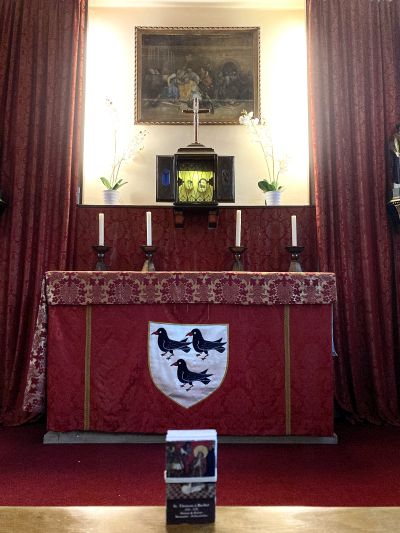
At St. Thomas of
Canterbury Catholic Church in Canterbury, there are a few
relics of St. Thomas Becket. Most of his remains were
destroyed/lost during the reign of Henry VIII.
|
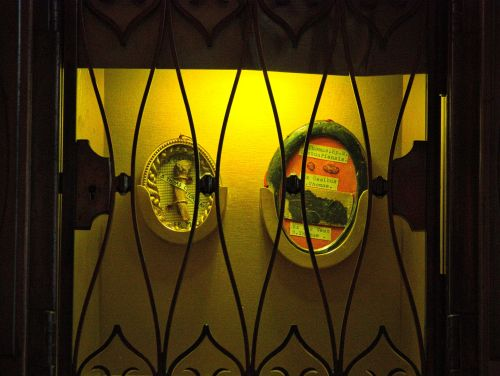
One of his finger
bones is on the left, a few bone fragments and piece of his
vestment on the right. |
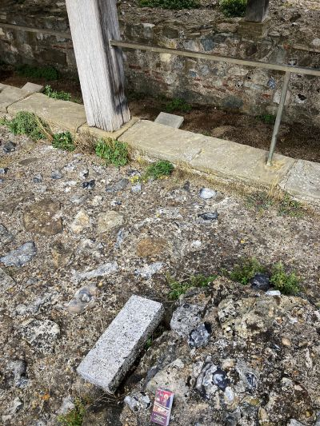
Ruins of St. Augustine's Abbey, Canterbury (6th century).
This is the location of one of the foundational supports for
the rood screen, which would have been a massive wall that
divided the sanctuary from the rest of the church. In the
Eastern Church, this same type of dividing wall is called an
iconostasis. |
|---|---|---|
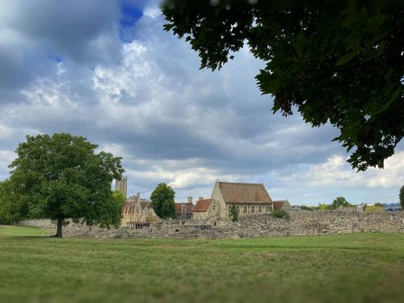
St.
Augustine's Abbey ruins with Canterbury Cathedral in the
background. |
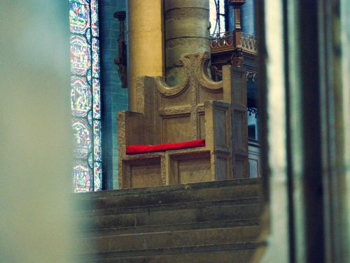
Back in Canterbury Cathedral one last time before heading to
Dover. This is the episcopal throne of St. Augustine of
Canterbury who became the first Archbishop of Canterbury in
597, and was known as the "Apostle to the English." |
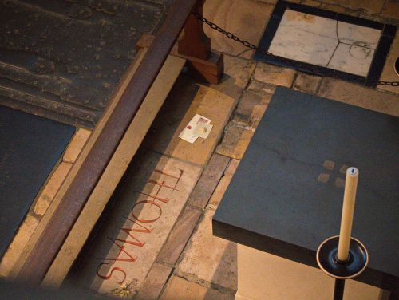
After three days, our intentions are still where I left
them, and someone had neatly arranged them, as well.
Tourists were even taking pictures of them! |
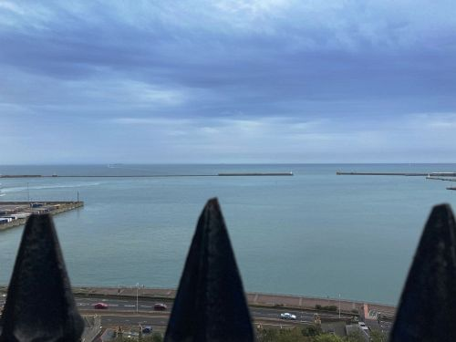
A
quick train to Dover. This is Dover harbor, from where 5
million men embarked to fight in World War I. It also saw
the return of the soldiers who were rescued from Dunkirk in
World War II. |
Dover is also a starting point for swimming the English Channel! A pub called The White Horse is where swimmers who return to England come and write their information on the ceiling and walls, commemorating their achievement. All the space is completely full, so the tradition has moved on to another pub nearby. |
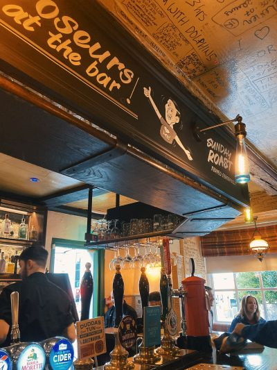
The White Horse
|
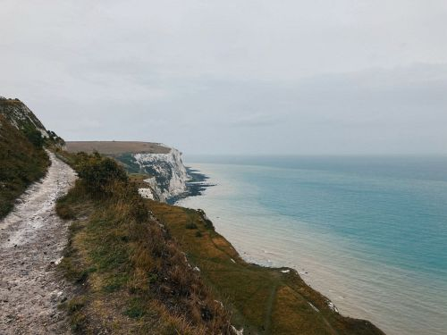
Walking
to the Cliffs of Dover. It was very rainy all day, which
made for slick, messy chalk paths. |
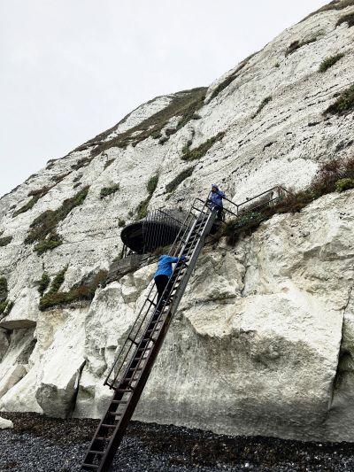
A
chalk switchback path (with rails, thank God) descends one
spot on the cliffs down to Langdon Beach. At the end of the
path you descend a ladder to the shingle beach. The beach is
made up of black spheres of water-smoothed flint rock that
runs in seams in the chalk face. One of these folks in the
picture said it felt like walking in a ball pit.
|
Langdon Beach |
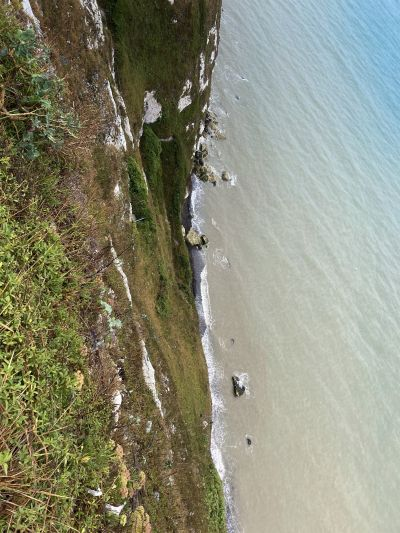
Looking over the
rail near the start of the path down to Langdon Beach
|
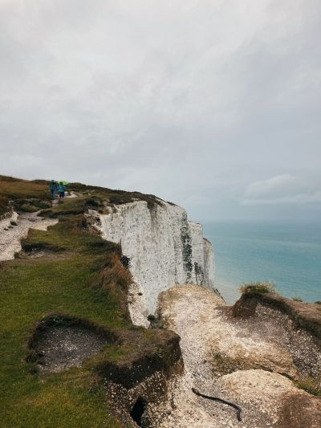
|
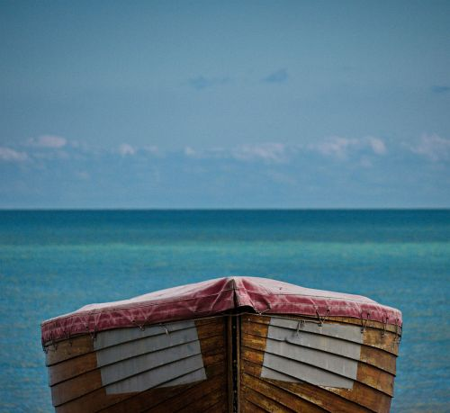
A boat at Deal.
Deal is about 10 miles from Dover, and is mentioned several
times in Patrick O'Brien's naval series (one of which is Master
and Commander). |
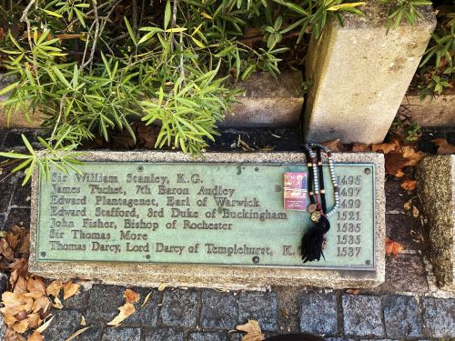
Back
in London, the spot outside the Tower of London where Saints
Thomas More and John Fisher were executed. |
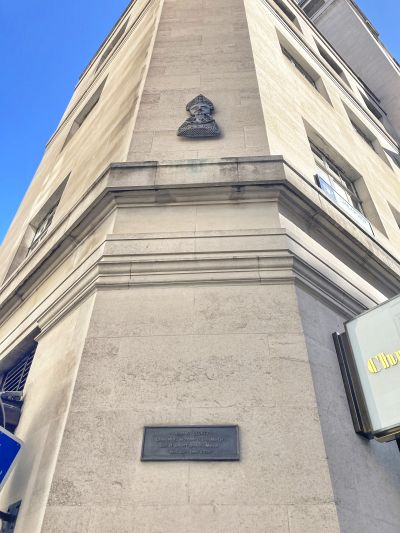
Site of St. Thomas Becket's birthplace, London
|
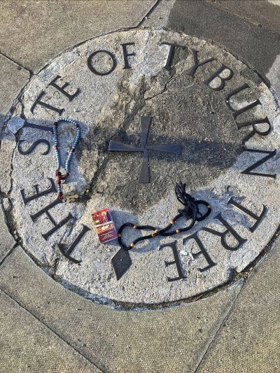
The site of Tyburn Tree near Hyde Park, London. This was the
location for most of the executions in London for many
centuries, and the site of many martyrdoms. Most of the
horrifically grisly executions, such as drawing and
quartering, were performed at Tyburn. The "tree" of Tyburn
refers not to an actual tree, but was the name of the
scaffold that was erected there. A community of cloistered
nuns, the Tyburn Convent, is nearby. They have many relics
of the martyrs who suffered at Tyburn, and they keep their
memory alive. |